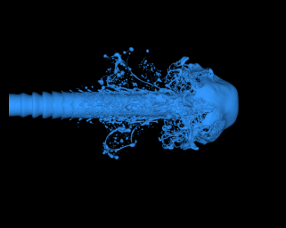

Turbulent liquid jet atomization
A dense cylindrical turbulent liquid jet is continuously injected into a quiescent lighter phase

Description
A dense cylindrical liquid jet is continuously injected into a quiescent lighter phase (with a density ratio of 1:27.84), and the inlet velocity is sinusoidally modulated. The solver couples gas-liquid two-phase flow, VOF interface transport, and surface tension to simulate the development of jet shear instability, liquid column breakup, and droplet formation.
Dataset Access
Cases
Quick Info
- Status: Community dataset
- Paper: basilisk example https://basilisk.dalembert.upmc.fr/src/examples/atomisation.c
- Contributors: Qianqi yang
- Contact: 226159802@qq.com
- License: Apache License 2.0
- Dimension: 3
- Grid: Nx=2048, Ny=2048, Nz=2048 (AMR)
- Field location: cell-centered
- Samples / snapshots: 185
- Format: custom binary
- Size: 125 GB
- Case conditions: We = 3000, Re =5800; We = 8000, Re =5800; We = 5556, Re =5800; We = 5556, Re =3000; We = 5556, Re =8000;
- Loading instructions: File format: custom binary